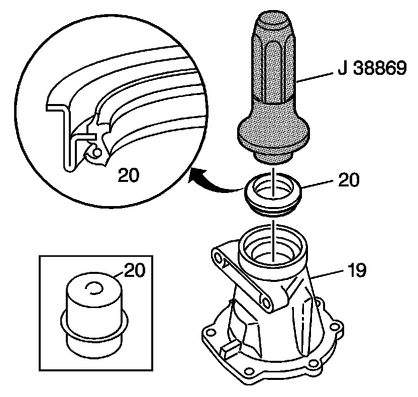
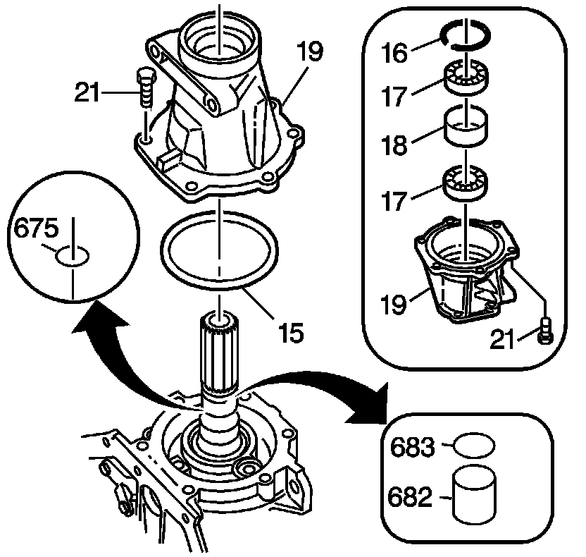

Case Extension Assembly Installation
Case Extension Assembly Installation
Tools Required
^ J 36850 Transjel(R) Lubricant
^ J 38694 Extension Housing Seal Installer
^ J 38869 Rear Extension Seal Installer

1. Install the prop shaft front slip yoke oil seal assembly (20) (model dependent) with the J 38869 or the J 38694 (for fixed yoke applications). Apply J 36850 or equivalent to the spring pocket of the seal.

2. Install the transmission output shaft yoke seal sleeve (682) and the output shaft seal (683) (for some models).
3. Install the output shaft seal (675) (for some models).
4. Install the bearing spacer (18), case extension ball bearing assembly (17) and the bearing retainer ring (16) (for some models).
5. Install the case extension seal (15) onto the case extension assembly (19).
6. Install the case extension assembly (19) onto the transmission case.
Notice: Refer to Fastener Notice.
7. Install the case extension bolts (21).
Tighten the bolts to 34 N.m (25 lb ft).